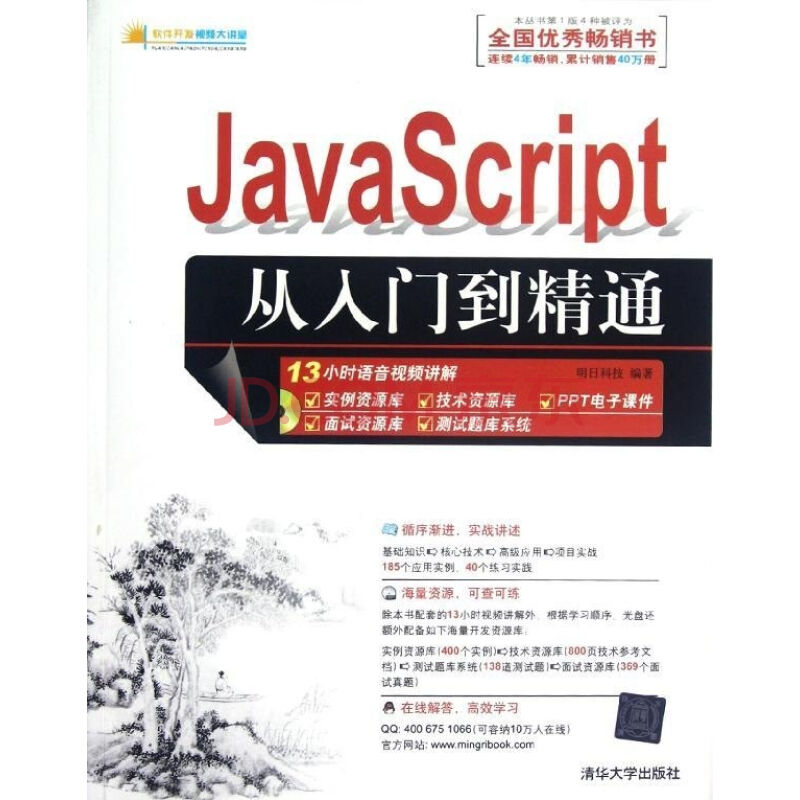

把Bootstrap框架的说明大概看了看，觉得做我这个博客基本是够了，抄来抄去意思不大了。还是扎扎实实看看Java吧，最近买的Java书也到了，就是下面这本书，推荐的人很多，就先买来看了。因为之前学过C语言的课程，自己也用python写过几个爬虫，所以前面的部分看的还得挺顺利的，也就是按着书上的例子敲一敲，把具体的语法规则记一下。比较喜欢分号结尾，比python的空格好多了，python简直是形式主义的典范，强迫症的最爱啊，之前因为Tab和空格的对应关系可是把我折腾坏了，还有UTF-8/GBK的各种纠结，不过也搞清楚了很多问题。
对了，还买了一本《高性能网站建设指南》,就是下面这本。总结的挺全面的，对于像我这样的小白很有帮助，也不是很高深，通俗明了。从提高页面加载速度的角度阐述了各种优化的方案。看完之后再看很多大牛的文章至少知道他们在说什么了，对自己的提高蛮大的，还有很多解决问题的方法挺不错的。那个把图标放到一张图里，然后用不同的定位取特定的区域来显示图案，以此来减少对服务器的图片请求数的方法思路真不错。还有之前只知道css样式要放到头部，脚本要放到底部，但是不太清楚为什么，书里面也说的比较明白了。解释了很多提高加载速度的方法并且解释了原因，理解记忆起来就好很多。书也不厚，大概用了两天看完了，有个别的看不懂，因为还没有学到相关的知识，回头可以经常翻翻。有一次拓宽了自己的眼界，要学的东西好多呀~~
这页的两个图片大小调了好几下都不满意，在电脑屏幕上感觉太大了，放到手机上感觉又太小了，媒体响应试了几下也没搞出来，